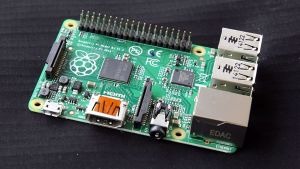

Ridge's Portfolio

Welcome to Ridge's Portfolio
Here you will find the following...
My Current Certifications
My Biography
My name is Ridge Scroggins, and for the past 22 years of my life, I've been fueled by a deep and lasting passion for technology. It's always been something I've gravitated toward, and over the years, I've devoted countless hours to learning, experimenting, and building within this ever-evolving field.I believe it all began with my dad. Back in the early 2000s, he was already very tech-savvy, and while technology wasn't as complex as it is today, it still felt like magic to me. Once he showed me what it could do, I was hooked.Like many kids, video games were a huge part of my early life. I'd stay up late, waiting in anticipation for releases I had looked forward to for months. Then came a game that changed everything for me, Skylanders. It introduced a physical element to video games, blending the real world with the digital. That's when I discovered the technology behind the character which were RFID chips and it became fascinated by how a real-world figure could become a playable in-game character.That curiosity sparked something deeper. I began exploring computer parts, building PCs, and experimenting with devices like Raspberry Pi boards. I even took apart my own consoles to understand how they worked. These hands-on experiences shaped not just my skills, but my mindset I love learning how things function and creating something meaningful from it.Since then, my interest has only grown. Whether it's working with hardware, coding, or solving complex problems, I find myself completely immersed in the world of technology. It's where I feel most focused, most inspired, and most capable. As I continue my journey through college and into my career, my goal is to keep building, learning, and contributing to the tech world. It's not just a field of study or a job to me it's a lifelong passion.
Raspberry pie
If your having trouble with the links for each page use these hints

- Go to the terminal
- Type in the command for access control Unlock
- type --key
- find the earliest and latest leter in the alphabet that is captilized within the Biography Example: if the earliest in the alphabet is C and the latest is F then Type CF
- Count the number of times the letter "I" is used in the Biography
- Make a space and then go to the Sky landers page and tell me the version number the the character list is on
- Lastly Give me the Last 2 letters on the first Skylanders charcter
- Only click the button below if you dont want to challenge yourself